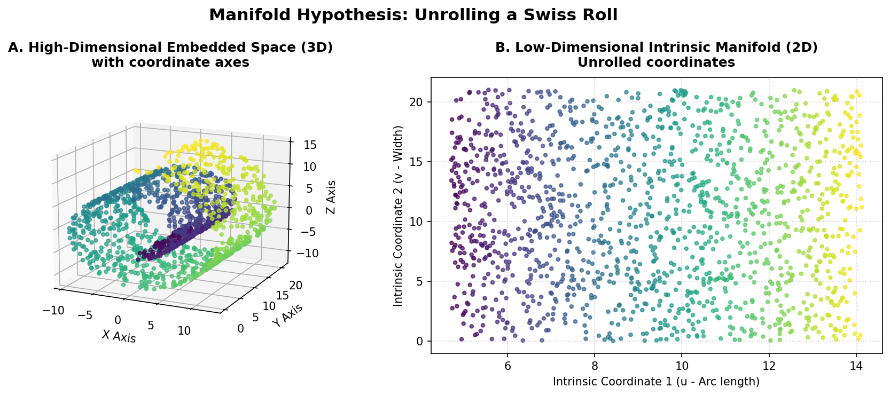
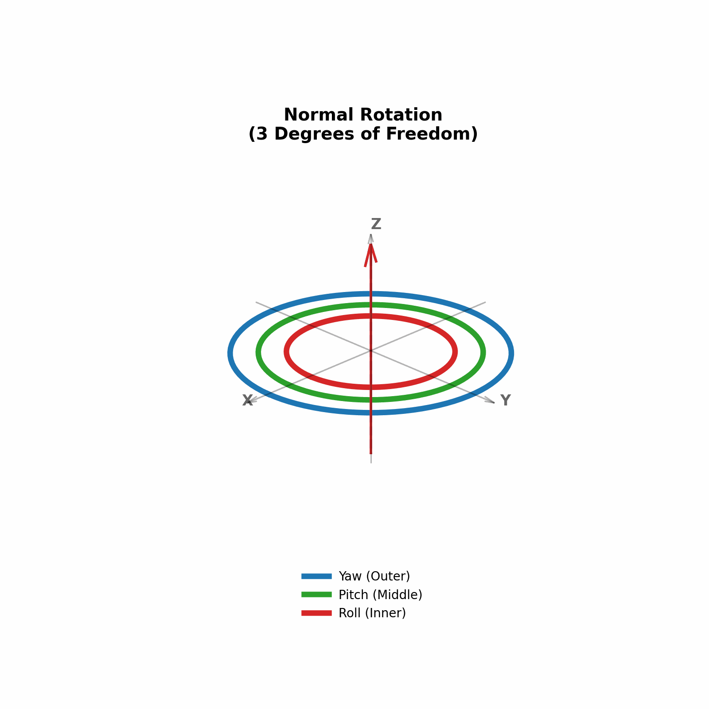

Manifolds & Dimensionality Reduction#
This section explores how manifold theory simplifies high-dimensional data representation, avoids numerical singularities, and enables smooth orientation changes in 3D applications.
1. What is a Manifold?#
Formally, a manifold \(M\) of dimension \(n\) is a topological space that locally resembles Euclidean space \(\mathbb{R}^n\) near each point. That is, every point \(p \in M\) has a neighborhood \(U \subseteq M\) that is homeomorphic to an open ball in \(\mathbb{R}^n\).
Intuition: The Earth is a 2D sphere (manifold) embedded in 3D space, but locally it looks like a flat 2D plane to us because any small patch of the Earth is homeomorphic to a flat disc.
{kind=link}

2. The Manifold Hypothesis in Data Science#
Note
The Manifold Hypothesis states that real-world high-dimensional data (such as images, text embeddings, or sensor signals) actually lies on or near a lower-dimensional manifold embedded within the high-dimensional space.
Deep Learning Application: In Deep Learning, a Feedforward Neural Network can be viewed as learning a sequence of homeomorphisms. It continuously deforms the input space (stretching, bending, and folding) so that complex, non-linearly separable data becomes linearly separable at the final layer.
Topological Dimensionality Reduction: UMAP#
While PCA assumes linear relations, algorithms like t-SNE and UMAP (Uniform Manifold Approximation and Projection) preserve local and global topological structures.
UMAP assumes that the data lies on a local Riemannian manifold and uses fuzzy simplicial complexes to represent its topology. It then projects the data into a lower-dimensional space while minimizing the cross-entropy between the topological representations.
3. Real-World Application: 3D Game Engines & Gimbal Lock#
In game development, 3D computer graphics, and aerospace engineering, a famous manifestation of coordinate singularities is Gimbal Lock.
The Problem: Euler Angles and Gimbal Lock#
To represent 3D rotation, the most intuitive method is using Euler Angles (Roll, Pitch, Yaw), which rotates an object sequentially around three orthogonal axes (e.g., first X, then Y, then Z).
Mathematically, Euler angles attempt to map the 3D rotation group (a 3D manifold called \(SO(3)\)) using only three coordinates. Just like mapping the 2D surface of the Earth collapses at the poles, any 3-parameter coordinate system for 3D rotations must contain coordinate singularities.
Warning
Gimbal Lock occurs when the Pitch (rotation around the Y-axis) reaches exactly \(90^\circ\) or \(-90^\circ\). The first and third axes of rotation (Roll and Yaw) align perfectly, collapsing the 3D rotation space locally into 2D. The system loses one degree of freedom and cannot rotate along the lost axis without experiencing unnatural jumps or distortions.
{kind=link}

The Solution: Quaternions#
To avoid this singularity, modern game engines (such as Unity, Unreal Engine, and Godot) represent rotations using Quaternions instead of Euler angles.
A quaternion is a 4-dimensional hypercomplex number:
Topological View: The set of unit quaternions forms a 3-dimensional sphere (\(S^3\)) embedded in 4-dimensional space \(\mathbb{R}^4\). The 3-sphere \(S^3\) acts as a double-cover of the 3D rotation group \(SO(3)\).
Singularity-Free: Because quaternions use 4 parameters to describe a 3D manifold, they avoid coordinate singularities entirely. There is no Gimbal Lock.
Smooth Interpolation: Using quaternions, game engines can perform SLERP (Spherical Linear Interpolation). This allows character models, camera rigs, and physics objects to rotate smoothly between any two orientations without visual glitches or acceleration spikes.
import numpy as np
from scipy.spatial.transform import Rotation as R
from scipy.spatial.transform import Slerp
# 1. Define orientation using Euler angles (Roll, Pitch, Yaw)
# Pitch at 90 degrees triggers Gimbal Lock in traditional Euler systems
euler_angles = [0, 90, 0] # Degrees
rotation = R.from_euler('xyz', euler_angles, degrees=True)
# 2. Convert to Quaternion [x, y, z, w] to resolve Gimbal Lock
quaternion = rotation.as_quat()
print(f"Gimbal Lock resolved. Quaternion representation: {quaternion}")
# 3. Perform Smooth Rotation Interpolation (SLERP)
# Define start and end orientations
rot_start = R.from_euler('xyz', [0, 0, 0], degrees=True)
rot_end = R.from_euler('xyz', [90, 45, 90], degrees=True)
# Set up SLERP interpolation
times = [0.0, 1.0]
key_rotations = R.from_quat([rot_start.as_quat(), rot_end.as_quat()])
slerp_operator = Slerp(times, key_rotations)
# Interpolate smoothly at t = 0.5 (halfway orientation)
interpolated_rot = slerp_operator(0.5)
print(f"Smoothly interpolated Quaternion: {interpolated_rot.as_quat()}")